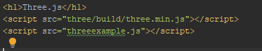
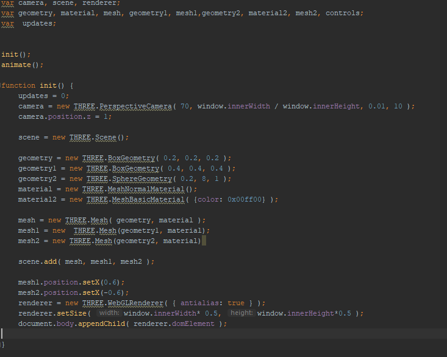
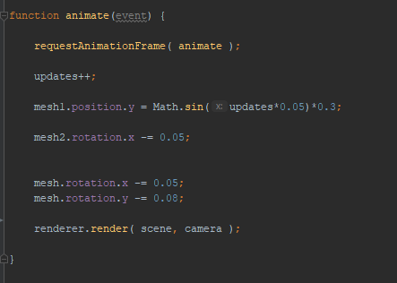

Three.js ist eine vereinfachte Oberfläche für WebGl
Wie Processing mit Setup(init) und Draw(animate)
Nutzung:
Verlinkung mit Three.js Javascript file,
für weitere Three.js Methoden Javascript-Module laden wie z.B Obj Loader (für obj)
oder andere um Animationen und co zu laden
Einbindung in Html:
Initialisierung im Javascript:
3d Objekte animieren:
